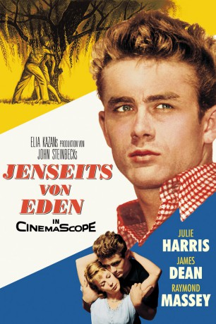
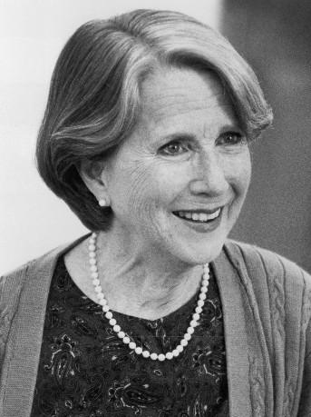
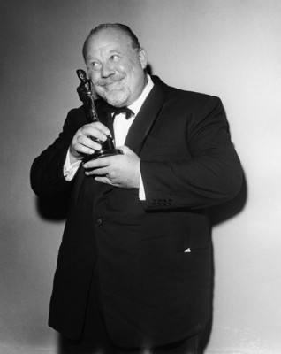
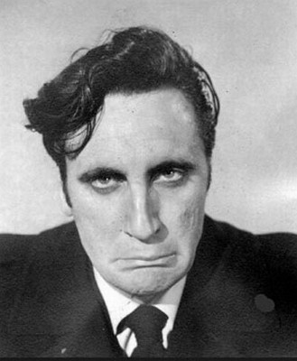
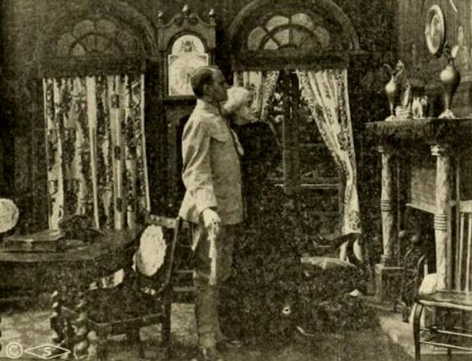

#1340 Jenseits von Eden
Alternativ: East of Eden
Auszeichnungen: 1 Oscars gewonnen für 3 Oscars nominiert 1 GoldenGlobes gewonnen
 
 IMDB-Wertung: 8.0 / 10
IMDB-Wertung: 8.0 / 10  Metascore: 0
Metascore: 0 
Die Literaturverfilmung nach dem gleichnamigen Roman John Steinbecks zeichnet ein Charakterporträt des jungen, rebellischen Sohnes, der sich nach der Liebe seines Vaters sehnt.
Jahr: 1955
Dauer: 115 Minuten
FSK: 16
Land: USA Studio: Warner Bros. Pictures Inc.Tonspuren: DD5.1 - ,
Untertitel: Deutsch,
Auflösung: 1080p (1920x752) Größe: 8949 MB
Genre: Drama
Regisseur:  Elia Kazan
Elia Kazan
Drehbuch: John Steinbeck, Paul Osborn
Soundtrack: Leonard Rosenman
Darsteller:
-  Julie Harris als Abra
- James Dean als Cal Trask
- Raymond Massey als Adam Trask
-  Burl Ives als Sam the Sheriff
- Jo Van Fleet als Kate
- Albert Dekker als Will Hamilton
 Lois Smith als Anne
Lois Smith als Anne-  Timothy Carey als Joe , uncredited
 Franklyn Farnum als Townsman at Carnival , uncredited
Franklyn Farnum als Townsman at Carnival , uncredited- Richard Davalos als Aron Trask
- Harold Gordon als Gustav Albrecht
- Nick Dennis als Rantani
- Abdullah Abbas als Townsman at Carnival , uncredited
- Rose Allen als Townswoman at Carnival , uncredited
- José Arias als Prisoner , uncredited
- Frank Baker als Townsman , uncredited
- Barbara Baxley als Nurse , uncredited
 John Beradino als Coalman at Lettuce Field , uncredited
John Beradino als Coalman at Lettuce Field , uncredited Joe Brooks als Townsman at Carnival , uncredited
Joe Brooks als Townsman at Carnival , uncredited- Jack Carr als Charlie - Townsman at Carnival , uncredited
- Wheaton Chambers als Townsman at Carnival , uncredited
 Lonny Chapman als Roy Turner - Automobile Mechanic , uncredited
Lonny Chapman als Roy Turner - Automobile Mechanic , uncredited- George Church als Townsman at Carnival , uncredited
- Edward Clark als Draft Board Member , uncredited
 Harry Cording als Bouncer , uncredited
Harry Cording als Bouncer , uncredited- Roger Creed als Townsman at Carnival , uncredited
- Bryn Davis als Townswoman at Carnival , uncredited
- Ray Dawe als Workman , uncredited
- Anna Dewey als Townswoman at Carnival , uncredited
 Lester Dorr als City Official at Parade , uncredited
Lester Dorr als City Official at Parade , uncredited- Joe Dougherty als Townsman at Carnival , uncredited
- Darren Dublin als Student , uncredited
- Al Ferguson als Townsman at Carnival , uncredited
- Cliff Fields als Student , uncredited
- Lloyd Ford als Townsman at Carnival , uncredited
 Robert Foulk als Man at Boxcar , uncredited
Robert Foulk als Man at Boxcar , uncredited- Nick Franke als Student , uncredited
- Robert Gardett als Townsman at Carnival , uncredited
-  Richard Garrick als Dr. Edwards , uncredited
- Chief Leonard George als Townsman at Carnival , uncredited
 John George als Townsman at Carnival , uncredited
John George als Townsman at Carnival , uncredited- Ruth Gillis als Undetermined Role , uncredited
- John Halloran als City Official at Parade , uncredited
- Sam Harris als Official at Parade , uncredited
- Jonathan Haze als Piscora's Son , uncredited
- Ramsay Hill als English Officer , uncredited
- Earle Hodgins als Shooting Gallery Concessionaire , uncredited
- Tex Holden als Townsman , uncredited
- Diane Howe als Student , uncredited
- Charles Anthony Hughes als City Official at Parade , uncredited
Datei: X:\1950-1959\Jenseits von Eden (1955, FSK16, 1920x752).mkv seit 23.06.2015
Festplatte: HD 1900-1970
 Es gibt insgesamt 141 Filme in der Gruppe '1950-1959'
Es gibt insgesamt 141 Filme in der Gruppe '1950-1959'